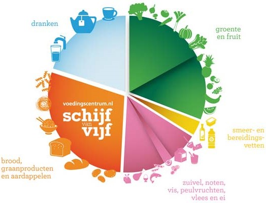
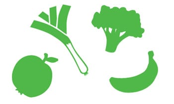
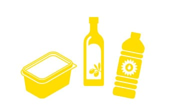
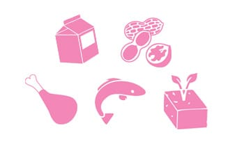
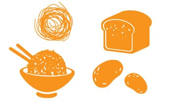
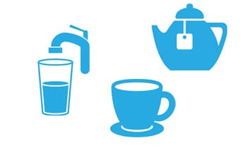

Blog 1: De Schijf van Vijf
De Schijf van Vijf is een voorlichtingsmodel dat laat zien wat gezond eten is. Het bestaat uit 5 vakken, met in elk vak andere type producten.
- Groente en fruit
- Smeer- en bereidingsvetten
- Vis, peulvruchten, vlees, ei, noten en zuivel
- Brood, graanproducten en aardappelen
- Dranken
Groente en fruit
Eet je veel groente en fruit, dan verlaagd dit het risico op hart- en vaatziekten, darmkanker en diabetes type 2. Ze zijn rijk aan vitamines en vezels. Hierbij geldt het advies: eet minimaal 250 gram groente en 2 stuks (200 gram) fruit per dag.
Smeer- en bereidingsvetten
Eet zo min mogelijk verzadigde vetten maar vervang deze door onverzadigde vetten. Overzadigde vetten verlagen de kans op hart-en vaatziekten. Hierbij geldt: hoe vloeibaarder/zachter het vet, des te meer onverzadigde vetzuren het bevat. Denk maar aan olijfolie dat vloeibaar blijft vs kokosolie of roomboter dat hard wordt.
Vis, peulvruchten, vlees, ei, noten en zuivel
Probeer minder vlees te eten en meer plantaardig. Varieer met (vette) vis, peulvruchten, noten, eieren en vegetarische producten. Neem genoeg halfvolle/magere zuivel, zoals melk, yoghurt en kaas, en iedere dag een handje ongezouten noten.
Brood, graanproducten en aardappelen
Kies bij dit vak voor volkoren graanproducten, zoals volkorenbrood, havermout, volkoren pasta en zilvervliesrijst. Volkoren producten bevatten namelijk veel vezels en B-vitamines.
Dranken
Neem voldoende vocht, zoals kraanwater, thee en koffie. Hierbij geldt het advies: minimaal 1,5L vocht per dag.
